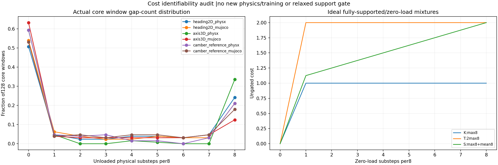

An offline audit of six existing native episodes identifies a limitation in the worst-substep cost. It does not establish a PPO gradient failure or show that the new S/T rewards solve continuous support. The matched native learning test is recorded separately.

| Historical episode | Core policy windows | At least one missing-support sample | Two or more missing samples | All eight missing |
|---|---|---|---|---|
| heading2D_physx | 128 | 63 | 57 | 31 |
| heading2D_mujoco | 128 | 59 | 51 | 27 |
| axis3D_physx | 128 | 52 | 46 | 43 |
| axis3D_mujoco | 128 | 47 | 42 | 16 |
| camber_reference_physx | 128 | 52 | 46 | 27 |
| camber_reference_mujoco | 128 | 60 | 55 | 23 |
Every source recording is SHA-checked against its completed analysis. Each 20 ms control window contains eight actual 2.5 ms force samples. Window starts are 1.44–3.98 s and their physical samples run 1.4425–4.00 s. This diagnostic has 128 windows;the nominal acceptance core separately includes 1,025 samples at 1.44–4.00 s. A missing-support sample means neither wheel has summed upward floor-normal force greater than 5 N. Individual contact-point counts are not substituted for wheel-summed force.
The 3D-axis PhysX actor fell in its original episode. Its post-fall support counts must not be interpreted as task success. The independent-camber actor remained upright but failed continuous support in both engines.
F_any,j = max(Fz_left,j,Fz_right,j,0) d_j = clip((0.5*m*g - F_any,j)/(0.5*m*g - 5 N),0,1) K cost = max_j d_j historical scale: [0,1] S cost = max_j d_j + mean_j d_j matched scale: [0,2] T cost = 2*max_j d_j matched scale: [0,2] raw contact reward = unchanged gated positive G bonus - cost external contribution = 0.4 * 0.02 s * raw contact reward
S and T agree for every uniform-force window,including partial loading. If a window has at least two samples at or below 5 N,repairing just one to 0.5 mg while another remains leaves K and T cost unchanged. S cost improves by 1/8,corresponding to +0.001 in this dt-scaled reward contribution. The counterfactual holds positive G at zero to isolate the ungated cost;it changes recorded forces arithmetically and is not an integrated trajectory. The positive support bonus and all other rewards may still change in actual learning. A 0.5 mg shaping margin is not a new acceptance threshold:the original strict 5 N support test is retained.
The causal comparison is S versus T. Comparing S against historical K alone would also change the maximum penalty scale. Both prospective arms retain the same positive G term,held-reference-beta gate,14 other reward terms,DR,initial full K checkpoint,fresh Adam,learning rate 0.0001,clip 0.1 and 2,457,600 refinement transitions. Both use the same independent signed left/right camber reference,3D axle objective,400 Hz native physics and 50 Hz actions. Neither absolute-height constraints nor a bilateral support requirement are introduced.
The intended next native test is mu=0.7 in PhysX and CPU MuJoCo before any new friction sweep. All original nine nominal gates and the separate whole-body review remain. Reduced jitter after stopping or support after falling cannot qualify the task.
Source hashes,window statistics and assumptions · 23 tests in the extracted complete snapshot · Frozen S/T protocol · Audit reproduction · Reward arithmetic · Time-stamped native execution observation.